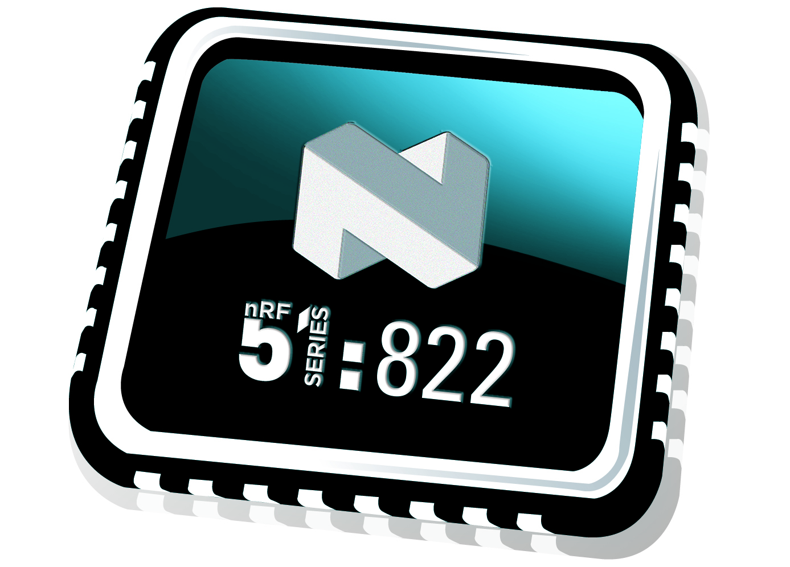

Система на кристалле с поддержкой Bluetooth Low Energy и проприетарных протоколов 2,4 ГГц
|
|
Ключевые особенности |
|

nRF51822: QFN 6x6 мм / WLCSP3.5x3.8 мм
|
- радиоблок 2.4 ГГц, совместимый с nRF24L01
- микроконтроллерное ядро ARM Cortex-M0
- до 256 КБ встроенной флеш-памяти и до 32 КБ ОЗУ
- встроенные периферийные модули SPI, UART, I2C (TWI), 3xTimer, RTC, 10 бит АЦП и компаратор, термодатчик, 31 GPIO
- блок PPI позволяет назначить выводы периферийных модулей на любые GPIO
- корпус QFN 6х6 мм либо WLCSP 3.5x3.8 мм
- напряжение питания 1.8 - 3.6 В (internal LDO mode) либо 2.1 - 3.6 В (internal DC/DC mode)
- низкое энергопотребление.
|
|
|
|
Краткое описание
Микросхема nRF51822 от компании Nordic Semiconductor - это решение "система на кристалле", включающее 2.4 ГГц RF-трансивер и микроконтроллер с ядром Cortex-M0. Комбинированное решение позволяет реализовать готовое устройство практически на одном чипе, используя минимум необходимых компонентов. Радиоблок на диапазон 2.4 ГГц реализует физический уровень стека протоколов Bluetooth Smart, и позволяет при необходимости реализовать другие протоколы обмена: как предлагаемые Nordic Semiconductor ANT, Gazell, ESB, так и частные решения заказчика. Более того, при необходимости устройство на базе nRF51822 может поддерживать несколько протоколов связи одновременно (например, можно поддерживать Bluetooth Smart и частный протокол). Это достигается благодаря тому, что протокольная часть стека Bluetooth реализована программно в виде библиотеки Nordic SoftDevice и выполняется 32-битным микроконтроллерым ядром Cortex-M0. Для Bluetooth Smart поддерживаются библиотеки SoftDevice S110 (Peripheral), S120 (Central, до 8 одновременных соединений), S130 (Central + Peripheral multilink).
Характеристики
- Ультранизкое энергопотребление
- 6.3 мA - TX при -4 дБм (3В с использованием встроенного DC-DC)
- 8.0 мA - TX при 0 дБм (3В с использованием встроенного DC-DC)
- 11.8 мA – TX при +4 дБм (3В с использованием встроенного DC-DC)
- 9.7 мA – RX (3В с использованием встроенного DC-DC)
- 13 мA – RX при 1 Мбит/с (без DC-DC)
- 10.5 мA – TX при 0 дБм (без DC-DC)
- 0.6 мкA – SYSTEM-OFF, без поддержания RAM
- 1.2 мкA - SYSTEM-OFF, поддержание 8 КБ RAM
- 2.6 мкA - SYSTEM-ON, вся периферия в режиме idle
- Мультипротокольный радиоинтерфейс 2.4 ГГц
- Регулировка выходной мощности от +4 дБм до -20 дБм с шагом 4 дБм
- Выходная мощность -30 дБм в режиме шепота (whisper)
- Чувствительность -96 дБм при 250 кбит/с
- Чувствительность -90 дБм при 1 Мбит/с
- Чувствительность -85 дБм при 2 Мбит/с
- Скорость передачи: 2 Мбит/с, 1 Мбит/с и 250 кбит/с
- Высочайшая электромагнитная совместимость
- Процессорное ядро:
- 32-bit ARM® Cortex™ M0 32-bit CPU
- Память:
- Встроенная flash-память 256/128 КБ
- Встроенная RAM 32 КБ / 16 КБ
- Системная периферия:
- 3 x 16/24-разрядных таймера со встроенным счетчиком
- 16 независимых каналов CPU Programmable Peripheral Interconnect (PPI)
- Шифрование: сопроцессор шифрования 128-bit AES ECB/CCM/AAR
- RNG
- RTC
- Сенсор температуры
- GPIO
- Гибкое программное конфигурирование GPIO
- 31 GPIO
- До 4-х ШИМ-портов
- Цифровые интерфейсы I/O
- Цифровые интерфейсы: SPI Master/Slave, 2-проводный UART
- Квадратурный декодер
- Аналоговые выводы I/O
- 8/9/10 - разрядные АЦП: 8 конфигурируемых каналов
- Малопотребляющий компаратор
- Осцилляторы:
- 16 МГц XO
- 16 МГц RCOSC
- 32 МГц XO
- 32 КГц XO
- 32 КГц RCOSC
- Управление энергопотреблением:
- Широкий диапазон питающих напряжений (от 1.8 В до 3.6 В)
- Гибкая схема управления энергопотреблением:
- Встроенный DC/DC - конвертер
- 600 нA @ 3 В при отключенном основном питании
- 2.6 мкA @ 3 В со всеми блоками в режиме idle
- 1.2 мкA @ 3 В при отключенном основном питании и поддержании 1 сегмента RAM
Области применения
- Аксессуары для мобильных телефонов
- Носимые устройства
- iBeacon
- Управление устройствами беспроводной зарядки
- Периферия для ПК
- Пользовательская электроника и пульты дистанционного управления
- Датчики тревоги, датчики приближения
- Умный дом
- Датчики для спорта, фитнеса и мониторинга здоровья
- Умные беспроводные метки
- Игрушки и игры с беспроводным управлением
- Системы управления домашним хозяйством
- Датчики промышленного и коммерческого назначения
- Системы управления освещением
Разновидности микросхемы
|
Обозначение |
Описание |
|
NRF51822-QFAA-H0 |
256K Flash, 16K RAM, QFN 48-pin 6x6mm, Rev.3. |
|
NRF51822-QFAB-C0 |
128K Flash, 16K RAM, QFN 48-pin 6x6mm, Rev.3. |
|
NRF51822-QFAC-A0 |
256K Flash, 32K RAM, QFN 48-pin 6x6mm, Rev.3. |
|
NRF51822-CEAA-E0 |
256K Flash, 16K RAM, WLCSP 62-pin 3.5x3.8mm, Rev.3. |
|
NRF51822-CDAB-A0 |
128K Flash, 16K RAM, WLCSP 56-pin 3.5x3.3mm, Rev.3. |
|
NRF51822-CFAC-A0 |
256K Flash, 32K RAM, WLCSP 62-pin 3.8x3.8mm, Rev.3. |
Дополнительные компоненты для nRF51822
|
Обозначение |
Описание |
|
BALF-NRF01D3 |
BALUN для nRF51822 в корпусе QFN 6x6 мм |
|
BAL-NRF02D3 |
BALUN для nRF51822 в корпусе WLCSP |
|
UXC-S3225-16M-NRF |
Кварцевый резонатор 16 МГц SMD 3.2 x 2.5 мм |
|
UXC-S3215-32K-NRF |
Кварцевый резонатор 32.768 кГц SMD 3.2 x 1.5 мм |
|
MLZ1608M100WT000 |
Индуктивность 10 мкГн типоразмера 0603 производства TDK, одобренная Nordic Semiconductor к применению с nRF51822 |
|
Johanson S402TS |
Набор ВЧ-конденсаторов Johason 0402 для прототипирования |
|
Johanson L402W |
Набор ВЧ-индуктивностей Johason 0402 для прототипирования |
|
Cirocomm DCAK0012 |
Керамическая чип-антенна 2.4 ГГц размером 3х1.6 мм |
|
Cirocomm PCAK0000-14 |
Керамическая чип-антенна 2.4 ГГц размером 5х2 мм |
Другие варианты антенн 2.4 ГГц в нашем каталоге
Техническая документация